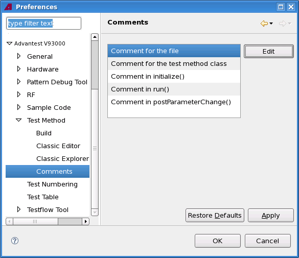

Comments preference page
The Comments preference page allows changing the comments in the test method source file when it is created. You can change the following options on the preference page.
Options |
Description |
|---|---|
Comment for the file |
Edit the comment for the test method file template. |
Comment for the test method class |
Edit the comment for the test method class template. |
Comment in initialize() |
Edit the comment for the |
Comment in run() |
Edit the comment for the |
Comment in PostParameterChange() |
Edit the comment for the |

Functional changes
- Introduced in SmarTest 6.5.2